20 candidates for Emmet's technique library (session 3D, H-26). Each was found in your instruction books and ranked by how widely official models in the LDraw OMR join its key parts (1315 sets mined). Each picture is a render of my sketch of it in Emmet's DSL, which validates with no findings; an accepted sketch becomes the technique, with its tests and render, and a rejected one is dropped. Nothing is taken from the models' files or the books' pages (D-48). Every candidate starts as Accept: switch the ones you don't want, add a note if it helps, then copy your answers and paste them to Claude.
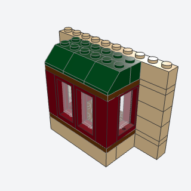
bay_windowA square bay that pushes three studs out of a wall, glazed on its front and both sides, under a lean-to roof.
The single feature that gives a cottage front the most character: a glazed bay three studs out of the wall under its own little roof, with a plinth that continues the wainscot.
Note: The square bay the research offers first (three faces at right angles); the books' angled faces need a 45 degree yaw. The floor and cap plates' back rows are plate courses in the wall line.
x, y, z, width, plinth, color, trim, roof, wallbatch-7/bay_window.py60593 + 60602 + 14716 + 3039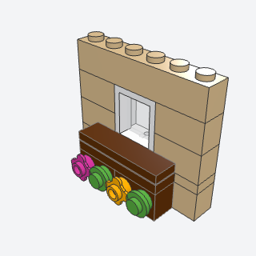
window_boxA planter under a window, bricks with side studs hung from the sill plate, flowers on their studs.
A planter of flowers under a cottage window; the books build one at every front window.
Note: The box hangs under the sill plate (studs into its underside) instead of carrying a tile on top, so the sill plate is the box's top and the window stands on its back row. Blooms alternate with leaves, as tabbed blooms side by side would touch.
x, y, z, length, color, flowers, leavesbatch-7/window_box.py11211 + 33291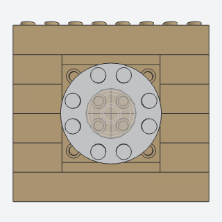
round_windowA bull's-eye window, a round plate with a round hole and a round glass tile in it, on side studs.
A bull's-eye window high in a gable or over a door; small, easy, and it breaks up a plain wall.
Note: The books put a round tile or ring on a side stud; the ring plate with a round hole (11833) and the 2 x 2 round glass tile are my choice of parts. Four 22885 give a 4 x 4 grid of side studs at a true stud pitch.
x, y, z, color, frame, glassbatch-7/round_window.py11833 + 14769 + 22885 (some of its parts weren't confirmed from the book; I'd pin them when writing it)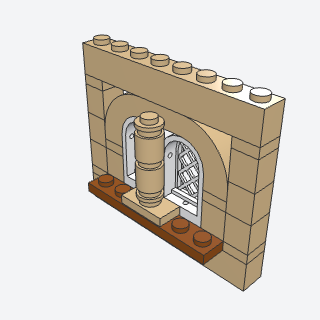
twin_arched_windowTwo round-topped windows side by side under one curved arch, a slim round column in front of the seam between them.
A Victorian or civic pair of tall windows under one stone arch with a column between, for a town house's upper floor.
Note: The book uses square 1 x 2 x 3 windows; Arch 6183's opening is a rounded rectangle, so square windows leave it open over them and the half-round 20309 doesn't fit it (collides by a plate). Round-topped 30044 windows with lattice panes (30046) fill its corners exactly, so I used them.
x, y, z, color, frame, sillbatch-7/twin_arched_window.py6183 + 30044 + 30046 + 3062b (some of its parts weren't confirmed from the book; I'd pin them when writing it)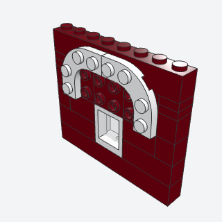
eyebrow_arch_hoodA half ring of trim over a window, two quarter-ring plates on side studs standing a plate proud of the wall.
A white half ring of trim over a window, a plate proud of the wall, for Victorian and shop facades.
Note: VARIANT of window_hood. The book's method A uses four Tile 2 x 2 Corner Round; two quarter-ring plates (68568) give a true half ring with a hole over the window in two parts. The ring stands out over the next course.
x, y, z, color, hoodbatch-7/eyebrow_arch_hood.py68568 + 22885 (some of its parts weren't confirmed from the book; I'd pin them when writing it)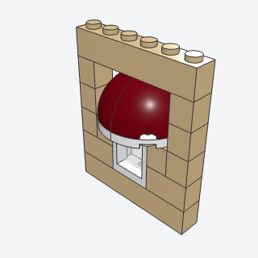
dome_window_hoodA padded half-dome canopy over a window, two curved-top round-corner bricks on quarter-circle plates.
A padded, rounded canopy over a window for a civic or festive facade.
Note: VARIANT of window_hood. The research didn't pin the dome's id; two curved-top corner bricks (5906) on quarter-circle plates make the half dome. 5906 and 7904 need different quarter turns for the same corner.
x, y, z, color, trimbatch-7/dome_window_hood.py5906 + 7904 (some of its parts weren't confirmed from the book; I'd pin them when writing it)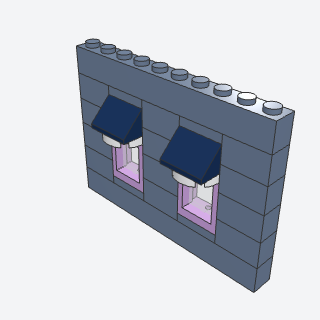
slope_hood_small_windowA small upper-floor window under a tiny hood, a round plate and a slope sloping out over it.
The small upper-floor window with a tiny dark hood, repeated every four studs along a row.
Note: Alternate, in place of round_hill_door. VARIANT of window_hood. Plate 2 x 2 Round has no lavender, so the trim defaults to white.
x, y, z, color, frame, trim, hoodbatch-7/slope_hood_small_window.py60592 + 4032b + 3039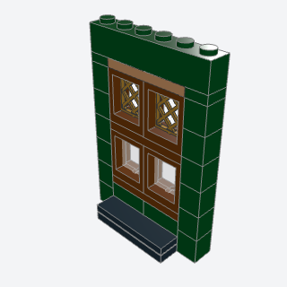
lattice_shopfrontA pub window, clear panes over a paneled base with diamond-lattice lights above them.
A pub or old-town shop window: clear panes over a dark paneled base with diamond-lattice lights above.
Note: VARIANT of shop_window (clear 1 x 2 x 3 panes under clear transoms): this one has lattice lights (38320, the 1 x 2 x 2 lattice pane) over 1 x 2 x 2 clear panes, a paneled base and a plinth ledge. The book's curtain rod and curtains are left out.
x, y, z, panes, frame, lattice, panel, plinth, trimbatch-7/lattice_shopfront.py38320 + 60592 + 60601 (some of its parts weren't confirmed from the book; I'd pin them when writing it)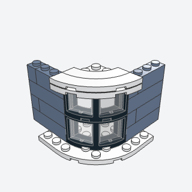
round_corner_bayA house corner rounded off by curved corner windows stacked on a round-cornered plate, the plate over them tying the bay to both walls.
Rounds off a house corner with curved glass, for a Victorian town house or a corner shop.
Note: The curved frame is Window Round Corner 3 x 3 x 2 (73878, used as the c01 assembly with its two glasses); the book's has three panes. The bottom plate reaches under both walls; the cap stops at the bay so the walls can go on after it.
x, y, z, tiers, corner, frame, trimbatch-7/round_corner_bay.py73878c01 + 6003 + 30565 (some of its parts weren't confirmed from the book; I'd pin them when writing it)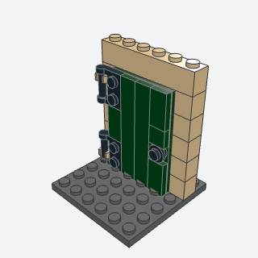
plank_doorA board door of tiles on a plate, hung on its two strap hinges in clips in the jamb, so it swings.
A board door for a cottage, shed, or cellar that really swings, built from tiles instead of a door part.
Note: VARIANT of hatch_on_hinge, upright. The book clips the plate onto a bar; here the door carries the bars (two Plates 1 x 2 with Handle, read as strap hinges) and the jamb carries the clips (60475b), which the validator seats. The door hangs on the wall's face, in front of the opening.
x, y, z, color, hinge, wallbatch-7/plank_door.py48336 + 60475b + 3032 + 6636 (some of its parts weren't confirmed from the book; I'd pin them when writing it)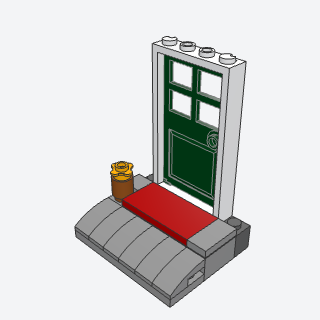
doorstep_and_matA lived-in entrance, a landing with a mat in front of the door and a round-nosed step down to the ground, a potted plant at one side.
Makes an entrance look lived in: a landing with a mat, a round-nosed step down to the path, a potted bloom.
Note: The books' lantern is left to wall_lamp_bracket. Assumes the floor is a brick above the ground, as in three of the four house books.
x, y, z, width, color, mat, pot, bloombatch-7/doorstep_and_mat.py11477 + 87079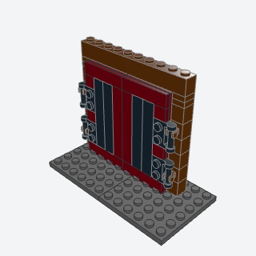
panel_garage_doorA pair of tall paneled leaves, tiles on plates, each hung on strap hinges in clips in its jamb so they swing open.
Tall paired garage doors with dark panels that swing open, for a fire station, workshop, or warehouse.
Note: Same hinge as plank_door (handles on the leaves, clips in the jambs) instead of the book's clip plates on bars. Each leaf is a Plate 4 x 8, so the opening is 8 x 20 plates.
x, y, z, color, recess, hinge, wallbatch-7/panel_garage_door.py48336 + 60475b + 3035 + 6636 (some of its parts weren't confirmed from the book; I'd pin them when writing it)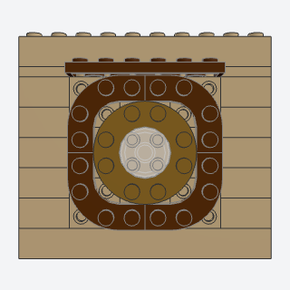
round_window_frameA round window in a big ring of four quarter-ring plates on side studs, a beam over it.
A big round window in a heavy ring, for a hill house or fantasy cottage, often in pairs either side of a door.
Note: Differs from round_window: the frame is a ring of four quarter-ring plates six studs across, with round_window's parts as the window inside it. The book's quarters are curved arch bricks in the wall's plane; I found none of radius 3, so the ring is on side studs.
x, y, z, color, frame, sash, glassbatch-7/round_window_frame.py68568 + 11833 + 22885 (some of its parts weren't confirmed from the book; I'd pin them when writing it)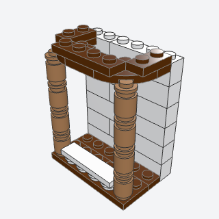
turned_post_porchPorch posts turned from round bricks and round plates, under a fascia that curves round the front corners and returns to the wall.
A cottage porch with turned posts and a fascia that curves round its corners instead of turning sharply.
Note: VARIANT of porch_posts (round-plate-and-brick posts, a curved fascia that returns to the wall, two layers). The book's corner is 79491, but that L-shaped plate has no stud or tube at its round corner, so it can't sit on a post; the quarter-circle plate 7904 can.
x, y, z, length, depth, tiers, color, fascia, railbatch-7/turned_post_porch.py3062b + 6141 + 7904 (some of its parts weren't confirmed from the book; I'd pin them when writing it)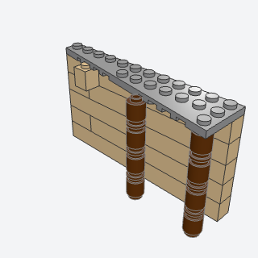
wing_plate_porch_roofA light porch roof over a side door, one tapered wing plate off the wall on turned posts and a corbel.
A light, tapered porch roof over a side or back door, one wing plate on two turned posts and a corbel.
Note: VARIANT of porch_posts and door_hood. The corbel takes one cell of the course under the wing.
x, y, z, ground, color, posts, wallbatch-7/wing_plate_porch_roof.py47397 + 3665b + 3062b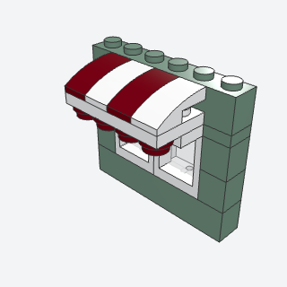
scalloped_awningA short striped-looking shop awning, a row of curved slopes on a plate off the wall, round plates hung under its edge as scallops.
A striped shop awning with a scalloped edge over each shop window.
Note: VARIANT of canopy. The book turns the slopes out and down on a bracket (2436b); here they lie on two stepped plates, curves down to the street, which reads the same from the front. A 2 x 1 curved slope with only one end on studs reads as floating, so the second plate carries both ends.
x, y, z, length, color, trimbatch-7/scalloped_awning.py11477 + 6141 (some of its parts weren't confirmed from the book; I'd pin them when writing it)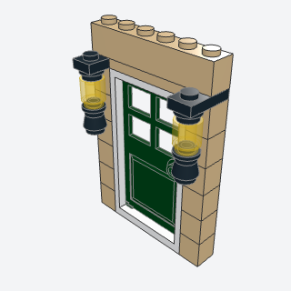
wall_lamp_bracketSmall lanterns hung from short arms that stick out of one of a wall's plate courses, either side of a door.
Lanterns on short arms either side of a door or between windows, at about five bricks up.
Note: Related to torch_sconce. The book's arm is a side-stud brick with a bar holder and bar; here it's a plate in a plate course, and the lantern hangs from it, each round piece held by the stud of the one below.
x, y, z, length, at, color, arm, glassbatch-7/wall_lamp_bracket.py3023b + 3062b + 6141 + 4589 (some of its parts weren't confirmed from the book; I'd pin them when writing it)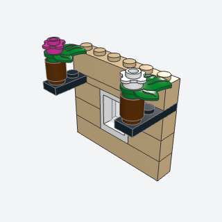
hanging_planterPlanters held out from a facade on short black arms, a pot of leaves with a bloom on each.
Pots of leaves and flowers held out from a pub or village facade between the windows.
Note: VARIANT of flower_bed (wall-mounted). The pot sits on its arm rather than hanging from a bar: a hanging leaf plate's leaves rise into the arm, so I left the trailing leaves out. The book's flowers on clips are round plates with tabs here.
x, y, z, length, at, color, arm, pot, leaves, flowersbatch-7/hanging_planter.py32607 + 3623 + 3062b (some of its parts weren't confirmed from the book; I'd pin them when writing it)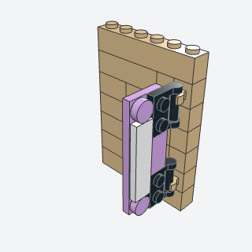
blade_signA tall shop sign standing out from the wall edge-on to the street, hung on two bar handles in clips.
A shop sign standing out edge-on from the wall so it reads from up and down the street.
Note: The sign hangs on two handles in two clips (the book uses one clip and a bar), with a plain Tile 1 x 4 where a printed tile goes. It only reads from +x; a second face would need a second board on the plate's underside.
x, y, z, color, board, trim, hingebatch-7/blade_sign.py48336 + 60475b + 3795 (some of its parts weren't confirmed from the book; I'd pin them when writing it)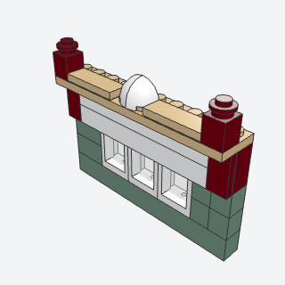
signboard_beamA deep sign beam over a shopfront, a smooth sign panel on side studs between dark ends, a cornice, a half-dome pediment, and a post at each end.
The deep sign beam across a shopfront, with room for a lettered board, a cornice, and a pediment, that hides the window tops.
Note: Uses 22885 (two rows of side studs) instead of 11211 so the board is two tiles deep, and two quarter domes (5848) as a small pediment in place of the half dome; the board is plain tiles where printed ones go.
x, y, z, length, color, sign, cornice, pedimentbatch-7/signboard_beam.py22885 + 4162 + 5848 (some of its parts weren't confirmed from the book; I'd pin them when writing it)